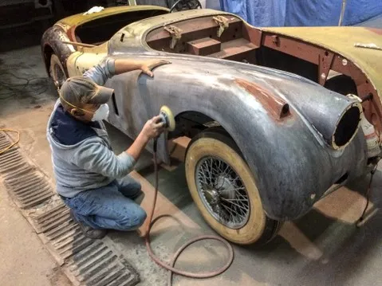
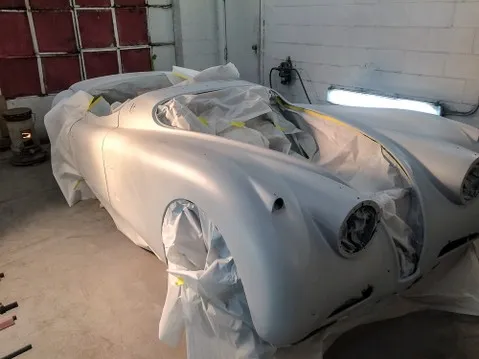

Paint and body · Durham, NC
Paint and body work on South Elm Street, from Pastor Al and Ms. Geneva.

Act’s is a small shop with a big Google record: 4.8 stars from 104 reviews. Customers talk about paint that matches, quotes that make sense and cars back early.
Mon to Fri, 8am to 5pm · 304 S Elm St

Photos: Act’s own before and after section, from its former website (archived 2021). Low resolution; new photos would replace them.
On the clock
What “quick” means here, in customers’ words.
- Dropped off: a fender that needed paint
- Pastor Al calls: come get it
- A metallic tri‑coat matched after a garage scrape
- A Land Cruiser panel repaired instead of replaced
Each line is from a Google review dated 2025. Not a promise; every job is different.
Paying out of pocket?
A straight quote, before you decide on insurance.
Three of the reviews here skipped insurance: a high deductible, an off road dent, a peeling trunk. Each one got a quote first, then decided.
The shop’s former website said it covers “every step of the repair process. From the carpet to the insurance claims office.” Claim or cash, ask Pastor Al.
Ask for a quoteAbout 5 years ago, I had a massive paint peeling on my trunk. Places closer to my area priced me at $1200+ to repaint the whole trunk. These guys did it for half that and did a fantastic job repainting my trunk. I am forever grateful and would absolutely recommend them for something like that.
What customers say
104 Google reviews, 4.8 stars.
We had a wonderful experience with Acts Paint and Body Shop. Our car looks brand new! They finished it earlier than expected and did an excellent job! Thank you Pastor Al and team!
If your car has a scrape and you aren’t sure where to go, this is the place!! When my car got scraped in a parking garage, I was worried about going through insurance because of my high deductible and potential rate increases. Pastor Al not only gave me an incredibly reasonable quote, he completed the job less than 48 hours after drop‑off with impeccable results (and my car has a metallic tri‑coat that is not easy to match!) Amazing work and amazing service at a reasonable price!! If I ever need paint or body work done again, I will be back.
Brilliant! I recently had my rear bumper repaired at Acts Paint, and I couldn’t be happier with the experience. The price was amazing, very reasonable compared to other quotes I received, and the repair was completed right on time. The team was professional and efficient, and the quality of the work exceeded my expectations. I strongly recommend Acts Paint to anyone looking for reliable and affordable auto body repair.